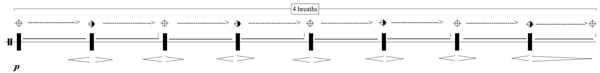
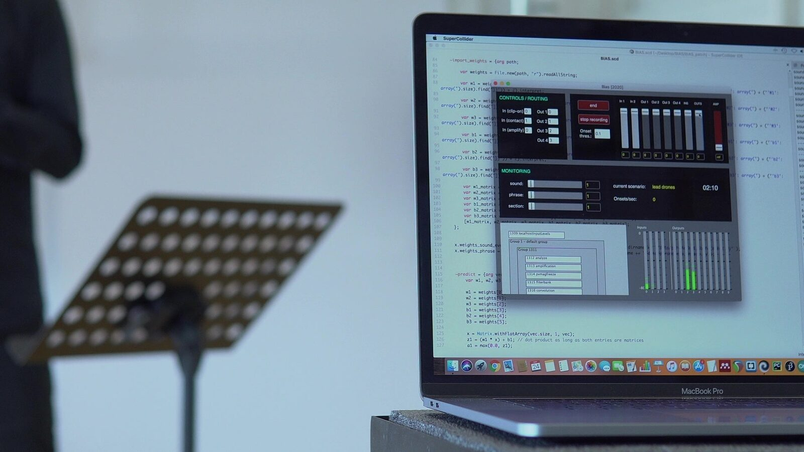
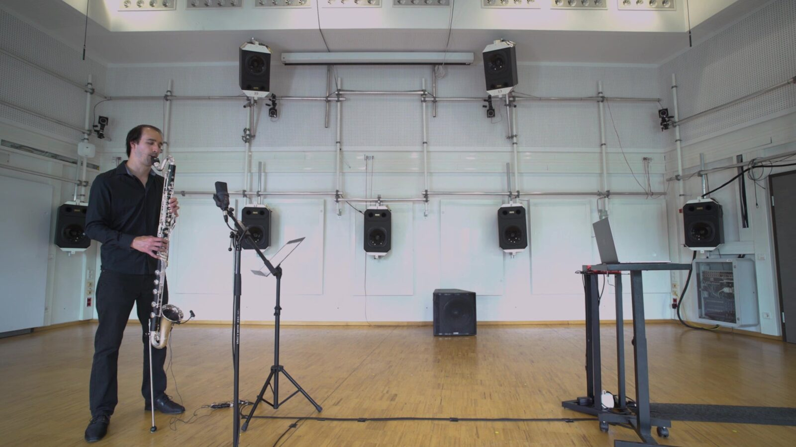
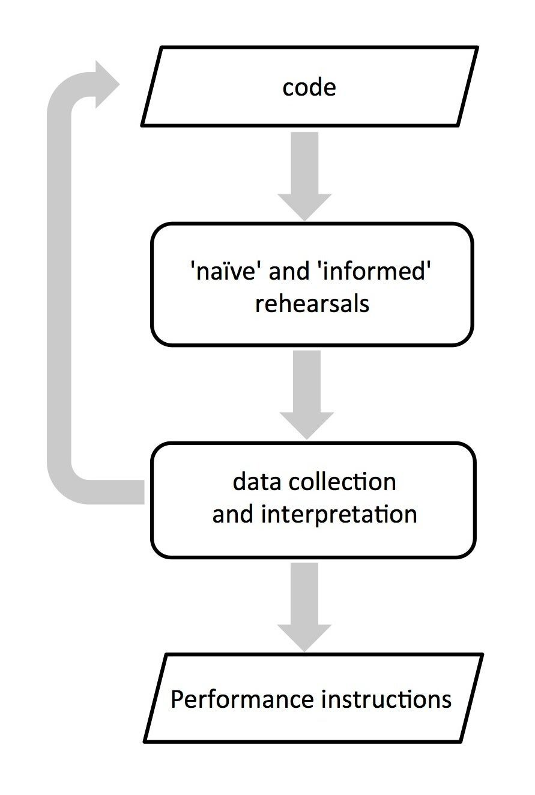

A Compositional Exploration of Computational Aesthetic Evaluation and AI Bias.
Abstract
This paper describes a subversive compositional approach to machine learning, focused on the exploration of AI bias and computational aesthetic evaluation. In Bias, for bass clarinet and Interactive Music System, a computer music system using two Neural Networks trained to develop “aesthetic bias” interacts with the musician by evaluating the sound input based on its “subjective” aesthetic judgments. The composition problematizes the discrepancies between the concepts of error and accuracy, associated with supervised machine learning, and aesthetic judgments as inherently subjective and intangible. The methods used in the compositional process are discussed with respect to the objective of balancing the trade-off between musical authorship and interpretative freedom in interactive musical works.
Author Keywords
Computational Aesthetic Evaluation, Music AI, Interactive Music Systems
CCS Concepts
•Applied computing → Performing arts; Sound and music computing;
Bias, for Bass Clarinet and Interactive Music System
Bias, for bass clarinet and Interactive Music System (IMS), explores the concept of computational aesthetic evaluation as a decision-making mechanism in human-computer music interaction. The question around which the work is centered is twofold: how can computers make aesthetically informed decisions in their interaction with human musicians and how can the machine autonomy afforded by computational aesthetic evaluation shape notions of musical authorship?
A symmetrical human-machine interaction, in which not only the musician, but also the computer, can make decisions that change the course of the performance lies at the core of interactive music. The work described here explores computational decision-making, focusing on the concept of computational aesthetic evaluation as a parallel for the aesthetically-driven decisions made by musicians in interactive and improvised musical contexts. The basis for this composition was a series of experiments aimed at developing a computer music system with idiosyncratic behavior, “subjective” aesthetic preferences and capable of communicating intentions and “cognitive states” through musical actions.
Concretely, the interactive system performs an aesthetic evaluation of the musician’s input in real-time and imitates sounds and textures it finds “interesting”, but remains silent or proposes new sound material when it loses interest in the musician’s input.
Neural Networks
The aesthetic evaluation of the musician’s input is performed by two Neural Networks trained on data collected with the help of clarinetist Szilárd Benes and evaluated by the composer based on her subjective aesthetic judgments. Recordings of improvisation sessions made with the help of the clarinetist were segmented and evaluated by the composer using a Likert-type scale from 1 (“not at all interesting”) to 5 (“extremely interesting”) and were used as training examples for the Neural Networks. Two separate pools of data were collected and used as training sets for two separate Neural Networks: one performing aesthetic evaluation on a sound event basis and the other on a texture basis. In both cases, aesthetic evaluation is treated as a regression task.
The features used for sound event evaluation include the Mel Frequency Cepstral Coefficients (MFCCs), spectral flux and amplitude of the sound event averaged over its duration. In the case of the amplitude, the standard deviation is used as well, in order to track amplitude fluctuations. The features used for texture evaluation include the mean spectral distance between consecutive sound events, measured by calculating the Euclidean distance between averaged MFCC vectors, the mean and standard deviation of Inter-Onset-Intervals (IOIs) and the mean and standard deviation of the durations of individual sound events. Texture evaluation is performed every second for the last five seconds of audio, using a moving window, while sound event evaluation is performed continuously, using an FFT window of 1024 samples and a hop-size of 0.5. Features are averaged over the (up-to-this-moment) duration of the sound event, i.e., if a sound event is in progress, features are averaged between its onset time and the current time point. The start and end time of individual sound events are determined using a k-nearest neighbor algorithm, trained to distinguish between clarinet sounds and background noise and using MFCCs as an input.
Unlike machine learning applications that involve objective ground-truth labels (i.e., “correct” answers), in this experiment the process of data labeling was explicitly focused on exploring the annotator’s/composer’s subjective bias, revealing some interesting aspects of intra-rater reliability, relating specifically to aesthetic judgments. Intra-rater reliability refers to the consistency with which a single rater labels data over several trials. The issue of intra-rater reliability was brought to the foreground accidentally, due to the need to repeat the data labeling and feature extraction process, in order to test the efficiency of different sets of features, by comparing the accuracy of the resulting machine learning models. However, intra-rater reliability seemed to be an issue even within the same trial, for instance, due to fatigue caused by listening to similar sound material for a long time. While consciously rating sounds with similar spectral characteristics with similar scores could help resolve this issue, such an approach was considered as contradictory to the premise of this work, which lies in the exploration of aesthetic judgments as manifestations of complex value systems and psychological processes that are intangible and subject to change. Consequently, any apparent lack of consistency in the labeling process was treated as an integral part of the phenomenon being modeled (i.e., aesthetic judgments), rather than a limitation that needed to be overcome.
The training process and subsequent testing of the obtained machine learning models revealed that the Neural Networks had indeed developed some interesting forms of “bias”. For instance, the Neural Networks seemed to prefer low frequency sounds over high frequency ones and static, drone-like textures consisting of sustained sounds over fast and virtuosic melodic passages. These preferences represent reasonable, though somewhat exaggerated assumptions about the author’s aesthetic preferences, demonstrating that the machine learning models did in fact “learn” some interesting correlations between the features and evaluations of individual sounds and textures, yet failed to capture the subtleties of the author’s aesthetic judgments.
At this stage, the machine learning models could have been improved further, by collecting more examples or adding new features. However, as the premise of this piece was not to simulate the author’s aesthetic judgments as accurately as possible, but rather to explore the artistic potential of AI bias, any “creative” or “distorted” (i.e., exaggerated) interpretations of the training data were instead exploited for their aesthetic potential. For instance, the preference of the machine learning model for slowly evolving, drone-like textures influenced the design of the generative processes of the IMS, largely determining the aesthetic direction of the piece.
Human-computer interaction in Bias
In addition to “mimicking” the musician’s input and remaining silent, the computer music system in Bias may try to “redirect” the musician’s attention towards specific types of sound material. An example of this behavior is its response to detected onsets (i.e., keyclicks). This includes the use of a series of signal processing techniques (e.g., convolution, comb filters etc.) applied only to the onset segment of the signal and meant to deter the musician from playing melodic passages (detected as frequent fingering changes) and encourage them to explore keyclicks and other percussive sounds instead.
Aside from decisions made on a sound event basis, which generally involve a choice between responding and remaining silent, the computer monitors and influences the formal development of the piece, by occasionally taking the “lead” and introducing new sound material. This behavior indicates that the computer has lost “interest” in the musician’s input for a while. The choice between “following” and “leading” is based on a relative evaluation of the last 20 seconds of the performance in relation to previous 20-second sections, rather than a hand-coded threshold.
The score of the piece consists of a pool of partially notated musical actions that are open with respect to pitch and duration and can be played any number of times and in any order. Durations are relative and given in “breaths”, rather than in seconds or through meter and tempo indications. For example, the following excerpt depicts a musical action that consists in transitioning repeatedly from air tone to pitch and back, while playing a multiphonic. In this example, there are no pitch or fingering indications, meaning that the musician is free to play any multiphonic, while the duration of the action is specified as “4 breaths”.


Bias: score excerpt.
The high level of abstraction involved in the score means that the musician’s actions are guided – at least in part – by the interaction affordances and idiosyncratic behaviors of the IMS through sonic stimuli: the concrete sounds played in a given performance emerge as a result of a negotiation between the musician’s choices and the computer’s aesthetic preferences.
The creative agency of the performer in the piece is underscored by the fact that all sound material generated by the IMS during the performance is collected during its interactions with the musicians - that is, all musicians that have performed the piece up to the present moment. Specifically, the IMS stores the spectral data of sounds it finds “interesting” in a sound database, which is continuously updated. These updates consist in both adding and removing sounds from the database based on their overall evaluation (i.e., keeping the most “interesting” sounds in each iteration). This effectively means that none of the electronic sounds heard in the performance were “composed”, a feature that adds to the high degree of autonomy of the IMS.
This sound database functions as a form of musical memory, connecting past instances of the piece to the present and maintaining continuity beyond a single performance. By “echoing” past performances, the IMS facilitates a mediated and asynchronous dialogue among performers, whereby each musician both contributes to and interacts with a collectively assembled sound corpus.
The ability of the IMS to autonomously collect and update its own sound database has yet another implication for the identity of the work. Namely, the electronic sounds heard in the piece can change significantly over a large number of instances (i.e., performances), a process over which the composer has no control. This process is suggestive of a meta-generative approach to music composition, in which the object of composition is not a space of sonic possibilities, but rather the behavior that generates it. The IMS and, by extension, the work evolves autonomously through “experience” (i.e., real-time interaction with human musicians), questioning traditional notions of authorship and ontologies of the musical work.
The recorded instrumental sounds are analysed by the IMS using a series of band pass filters and envelope followers and resynthesized using additive synthesis. Instead of an exact resynthesis, the computer creates spectral variations of the initial sound, the relation of which to the original can be more or less recognizable. This is achieved by reducing the spectrum to a small number of frequencies (e.g., reproducing only the most prominent frequencies, or resynthesizing a filtered version of the original sound). This allows the algorithm to generate sound material that, though originally derived from instrumental sounds, is still distinct from the acoustic sound and has a certain degree of plasticity. The computer can generate and interpolate between a virtually infinite number of spectral variations of a single sound and, by changing the degree of spectral “compression” applied to it, interpolate across the recognizability spectrum.
Bias, performed by Szilárd Benes. The video is also available at: https://www.artemigioti.com/demos/Bias.html.




Bias: rehearsal with Szilárd Benes.
Computational Aesthetic Evaluation, Aesthetic Experience and Aesthetic Theory
In addition to AI bias, the composition described in this paper explores computational aesthetic evaluation in an approach that implies a critical perspective towards reductionist approaches to aesthetic evaluation and comments on the gap between computational aesthetic evaluation and aesthetic experience and theory.
While artistic applications of computational aesthetic evaluation in generative systems generally seem to acknowledge the complex and subjective nature of aesthetic judgments [1][2], applications of computational means and crowd-sourced aesthetics in the evaluation of artworks often appear to be based on rather simplistic assumptions about both aesthetic experience and theory. A common approach to the aesthetic evaluation of musical works involves the use of formulaic aesthetic measures such as Zipf’s law [3], which states that the occurrence frequency of an event is inversely proportional to its statistical rank, and Birkhoff’s [4] aesthetic measure, which is expressed as the ratio between order and complexity. Applications of Zipf’s law in the evaluation of musical works [5][6] seem to equate concepts such as ‘pleasantness’ or ‘popularity’ with aesthetic value and have been criticized for assuming that aesthetic value can be judged based on universal aesthetic principles [7]. Furthermore, the relevance of Zipf’s law for musical styles that favor repetition or stasis (e.g., minimalism and noise music) has been challenged [8].
Galanter [9] suggests that the fields of psychology and neurology could provide useful insights for computational aesthetic evaluation. He specifically cites psychological models of human aesthetics, such as Arnheim’s [10] law of Prägnanz, which states that perceptual cognition prioritizes wholes and clarity of structure over individual components, Berlyne’s concept of arousal potential and its relation to hedonic response [11][12] and Martindale’s [13] neural network model of aesthetic perception that relates preference with prototypicality (i.e., the degree to which a stimulus is typical of its class).
However, the assumption that aesthetic experience can be reduced to perception is debatable. In a discussion on the ‘gap’ between empirical aesthetics and aesthetic experience, Makin [14] criticizes what he calls the ‘reductive psychophysical approach’ to aesthetic science, which involves varying a stimulus dimension x and measuring some subjective experience y. His criticism concerns the assumption that stimulus dimensions are orthogonal and their effects independent, as well as the nature of the responses that can be evoked in a lab setting (i.e., ‘cold’ cognitive evaluations, as opposed to ‘hot’ emotional reactions). As Makin points out, an artwork is the opposite of a controlled stimulus: it is a ‘labyrinth’ of interacting perceptual and semantic dimensions which cannot be easily isolated or quantified.
Similarly, Leder and Nadal [15] criticize Berlyne’s [12] psychobiological aesthetics as ‘weak and overly simplistic’ and argue that the psychological mechanisms involved in the appreciation of art extend beyond the perception of aesthetic qualities to ‘grasping an artwork’s symbolism, identifying its compositional resources, or relating it to its historical context’ and that an aesthetic episode consists in feedback and feedforward interactions among cognition, perception and emotion. Their approach is based on an information-processing model of the aesthetic experience of art that takes into account declarative knowledge, domain-specific knowledge and personal taste and acknowledges the ambiguities involved in the perception and interpretation of art [16]. This model suggests that aesthetic experience begins before perception, with the social discourse and context that shape expectations and contribute to the artistic status of the work. In line with Dewey’s [17] view of experience as interaction with the physical, cultural and institutional environment, Leder et al. [16] argue that contextual factors, such as presentation formats, play an important role in aesthetic experience.
The importance of domain-specific knowledge for aesthetic experience is evidenced in a study by Kozbelt [18], in which non-artists and art students were asked to rate 22 in-progress states of Henri Matisse’s Large Reclining Nude. The study revealed significant differences in aesthetic judgment criteria between the two groups. Art students valued originality, while non-artists seemed to prioritize technique and realism and judged the painting as getting worse over time, as the abstraction of the image increased. To make matters more complex, the aesthetic value of an artwork might not lie in its physical manifestation, but rather in its concept (e.g., conceptual art) or the social relations it materializes.
The ambiguity surrounding the concept of aesthetic experience and its complex, overlapping dimensions have been a ground for debate not only in aesthetic science and empirical aesthetics, but also in aesthetic theory. Shusterman [19] identifies four dimensions of aesthetic experience: an evaluative, a phenomenological, a semantic and a demarcational-definitional one, which concerns the demarcation of art from other domains of human activity. He attributes the marginalization of the concept of aesthetic experience in analytic philosophy to tensions generated by these four dimensions and a ‘deep confusion about this concept’s diverse forms and theoretical functions’.
Galanter [9] claims that computational aesthetic evaluation is a difficult and fundamentally unsolved problem. Far from trying to solve this problem, the composition described here attempts a ‘meta-aesthetic exploration’ [9], which involves artificially created aesthetic standards rather than simulated human aesthetics, while acknowledging that aesthetic preferences are culturally grounded, highly subjective and hard to rationalize and predict. By trying to do exactly that, i.e., predict and simulate aesthetic judgments, it attempts a reductio ad absurdum (Latin: “reduction to absurdity”) of the concept of aesthetic evaluation. It questions whether it is possible to simulate aesthetic judgments or trace the criteria on which they were based using computational means. Considering that aesthetic preferences are subject to change – both on a cultural and individual level – and are often hard to describe in propositional terms, what is being simulated here is at the same time ephemeral, erratic and intangible; essentially: impossible to simulate.
Another contradiction that is made apparent in this process concerns the focus of supervised learning algorithms on closed-ended tasks, i.e., tasks that have “right” answers, as contrasted with the open-endedness of artistic practices. Particularly in artistic practices that prioritize interactivity and, by extension, unpredictability and emergence, the intended role of machine agency is not to predict the “right” or most “accurate” answer, but rather to produce “creative” and even “unlikely” answers that the composer-programmer might not have envisioned. A concept as impalpable and ambiguous as that of (perceived) aesthetic value offers an interesting ground for artistic experimentation, gravitating away from right/wrong dichotomies (or spectra) and towards autonomous and idiosyncratic agentic behaviors that can produce unexpected musical outputs.
In Bias, the discrepancies between the subjectively and culturally grounded attribution of aesthetic value, on the one hand, and the concepts of error and accuracy normally associated with supervised learning algorithms, on the other, are problematized and brought to the foreground. The work aims to draw parallels between aesthetic judgments as inherently “biased” (i.e., subjective) and AI bias, a phenomenon that consists in machine learning algorithms making arbitrary assumptions about data, or amplifying any bias present in the data. The composition takes a critical and subversive approach to machine learning, the aim of which is not to simulate the composer’s aesthetic preferences as accurately as possible, but rather to use them as a departure point for the development of AI bias. What is essentially a specificity of machine learning algorithms and normally viewed as an unwanted outcome of the training process is explored for its potential to produce idiosyncratic agentic behaviors.
Compositional Process and Methods
The compositional process for Bias was centered around a series of improvisation experiments, conducted with the help of the musician and meant to help balance the trade-off between authorship and interpretative freedom in the piece. These experiments included a ‘naïve’ and several ‘informed rehearsals’ [20], the difference between the two being whether the musician is given information regarding the interaction affordances of the IMS prior to the improvisation. Data from these improvisation sessions was collected using a combination of ethnographically informed methods, including observation, a questionnaire and a semi-structured interview. These methods were selected for their complementarity in terms of perspective, with observation focusing on the composer’s perspective and the questionnaire and interview on the performer’s, and their potential to facilitate a creative dialogue focused on open-ended questions/problems and creative discovery. These experiments were conducted with the participation of clarinetist Szilárd Benes. A repetition of these experiments with other musicians would potentially benefit this research, but wasn’t possible due to time constraints and limited resources.
The methods mentioned above are considered as ethnographically informed or inspired rather than purely ethnographic, as their use within an artistic research context inevitably meant that they had to be adapted considerably. The intent behind the selection of these methods is strongly aligned with the ‘transactional’ and ‘subjectivist’ epistemology of the constructivist research paradigm, in which investigator and object of investigation are interactively linked and knowledge is created as a result of and through that interaction [21]. Yet, in the context of practice-based artistic research “knowledge” has to be understood in radically relativist and subjectivist terms: knowledge here is simply insight gained through and feeding back into the compositional process.
The purpose of the naïve rehearsal was to identify the perceived interaction affordances of the IMS and determine their effectiveness in communicating compositional intent. The question driving this experiment was: how effective are interaction affordances in guiding the performer into an action space that is aligned with the aesthetics of the piece? The broader context within which this question was asked was that of a ‘subtractive’1 approach to the compositional process, which involves starting from an improvisational context and gradually introducing a series of constraints or instructions, until arriving at an aesthetically narrower yet, as far as concrete musical actions are concerned, still open space of sonic possibilities. The informed rehearsals provided an opportunity to further refine these performance instructions, as well as the code.


Compositional Process.
After the naïve rehearsal, the musician was asked to fill-in a questionnaire including questions on the degree of responsiveness, autonomy and agency of the IMS. The musician’s responses indicated that he was uncertain as to whether the system’s responses were predictable, while he assessed its responsiveness as higher than its autonomy. He agreed that musical changes introduced by the system influenced his actions and changed the course of the improvisation, but thought that there were no moments in which the computer was “leading” the improvisation. He correctly identified that the system was listening only some of the time. When asked to describe different behaviors exhibited by the system, he focused mainly on the description of different types of sound material and textures (e.g., drone-like sounds vs percussive sounds).
In the interview that followed, he pointed out that, in some cases, the same sound material (e.g., key clicks) caused different responses and implied that the system might produce responses on different time-scales. He also mentioned that the computer responded to some, but not all of his actions, but suggested that he was uncertain whether that was because the computer was not listening all of the time, or whether it was intentional. Along with the system’s degree of autonomy, the musician expressed criticism towards the lack of timbral and rhythmic variability in the sound material used by the computer. When asked to explain in what ways the IMS influenced his actions and changed the course of the improvisation, he responded that it was by introducing new sounds, causing him to adapt his own sound material to the computer’s output.
Overall, the musician was able to identify many, though not all of the behaviors exhibited by the system. He was able to distinguish between behaviors such as “following” and “leading” – though he did not use these terms to describe them. He correctly observed that the system produced different responses for different types of sound material and that its decision-making was driven by non-linear processes (i.e., the same action did not always cause the same response).
Also noteworthy is an apparent contradiction in the musician’s responses. Concretely, the musician suggested that sound material introduced by the IMS caused him to adapt his actions and changed the course of the improvisation, yet he could not identify any moments in which the computer was “leading”. This discrepancy could be indicative of a reluctance to associate the term “leading” with the interactive music system, despite recognizing and describing instances in which the system initiated musical changes, causing the musician to follow its “lead”.
Observation of the naïve rehearsal helped identify some further issues with the design of the IMS and assess how effective its interaction affordances were in communicating compositional intent. The sections of the improvisation in which the computer was “leading” seemed to be particularly effective in guiding the musician’s actions towards specific timbral and textural qualities, yet allowing sonic exploration and experimentation. Already in this first rehearsal, it was clear that this interaction scenario would not require any performance instructions. Similarly, the system’s response to keyclicks, seemed to guide the musician away from highly virtuosic and dense melodic passages and towards the exploration of percussive material, such as keyclicks and slap tones. In this case, however, the space of sonic possibilities created by the system’s interaction affordances was still too vast and would need to be reduced further, through some form of performance instructions. The perceived lack of autonomy of the system was also identified as an issue that needed to be addressed, an observation that was in agreement with the musician’s comments. In the version of the code that was used in this experiment, the IMS tended to remain silent, rather than propose different sound material, when it lost interest in the musician’s input. The code was later revised, in order to increase the agency of the IMS and facilitate a more symmetrical relationship between the clarinetist and the computer.
The relationship between interaction affordances and performance instructions, as well as compositional and interpretative decisions was further refined through a series of informed rehearsals. In these sessions, the musician was asked to improvise with the interactive music system after being given some general information regarding its design and interaction capabilities, but without being given any performance instructions. Data from these sessions was collected through observation, as, in this part of the compositional process, the focus shifted from the exploration of intended and perceived interaction affordances of the IMS to the analysis and further refinement of the action space available to the performer.
One of the creative decisions inspired by such an informed rehearsal concerned the use of “key releases” instead of keyclicks, as a means to create more delicate and less controllable/virtuosic pointillistic textures. This technique consists in pressing the keys as quietly as possible and then releasing them, letting only the “release” section of the gesture sound. In order to make sure that pressing the keys does not activate the system’s onset detection, the musician has to press the keys quietly and slowly, which means that playing high-density textures using this technique is practically impossible.
In addition to the exploration of playing techniques and various forms of performance instructions, the informed rehearsals provided an opportunity to improve the design of the IMS and refine its decision-making processes. For instance, after a few improvisation sessions, it became obvious that the IMS handled musical form in a way that lacked context-awareness. Aesthetic evaluation alone seemed insufficient in determining the duration of larger sections of the piece and the balance between different types of sound material and textures. The system never got “bored” of sounds it “liked” and, as a result, kept playing the same material for long stretches of time. As a means to increase its context-awareness, the decision-making stage of the IMS was enhanced with a “memory” that kept track of the duration of different types of sound textures, as well as a preference regarding the overall duration ratio between “drones” and “onsets”, favoring the former.
It’s important to note that, despite the fact that some of the methods described above are commonly employed in the evaluation of human-computer improvisation systems [20], their use in this context had a completely different purpose. The musician’s contribution was valuable in identifying some shortcomings in the design of the IMS and devising effective performance instructions, yet the purpose of these experiments was not an “evaluation” of the IMS by the performer, nor a revision of the code or performance instructions based on crowd-sourced aesthetics. Far from “grounding” compositional decisions in qualitative data, this approach sought to facilitate aesthetic reflection as part of the compositional process and help crystallize the author’s ideas and the aesthetic values manifested in them.
Discussion
At the time of writing this paper, Bias has been premiered by Szilárd Benes at the 2020 Ars Electronica Festival (Linz, Austria), but has not received any further performances. In this first performance, the preferences of the IMS appeared to have a strong influence on the musician’s actions, who seemed to repeat sound material that consistently evoked a response from the system. As a result, the initially vast space of possibilities available to the musician was effectively reduced to what could be described as a “common language” between the clarinetist and the IMS. Interestingly, the musician seemed to consciously avoid playing sounds that did not evoke a response from the IMS, even though the score does in no way limit the selection of sound material to sounds that the IMS responds to. Indeed, sounds that the IMS finds “uninteresting”, can be employed by performers as a source of musical contrast and tension. Whether other performers will follow a similar approach remains to be seen.
As a central aspect of this piece is the “sound memory” of the IMS and its evolution over a large number of instances, more performances, particularly ones by different performers, will be necessary in order to better understand its role in shaping the identity of the work. Of particular interest for future analysis could be the frequency in which this memory gets “overwritten” and the contributions of individual performers to it. Aspects of interpretative freedom and individuality in the piece could also be studied using ethnographic methods.
Acknowledgments
The author wishes to thank Szilárd Benes for his contribution to this project and Marko Ciciliani for his feedback on this manuscript. This research was funded by the Austrian Science Fund (FWF): AR 483-G24 .
Compliance with Ethical Standards
Participants granted informed consent and were paid for their participation in this research.
Footnotes
Marko Ciciliani, in discussion with the author, March 2019.
↩
Citations
- ↩McCormack, J., & Lomas, A. (2021). Deep Learning of Individual Aesthetics. Neural Computing and Applications, 33(1), 3–17. https://doi.org/https://doi.org/10.1007/s00521-020-05376-7
- ↩Galanter, P. (2014). XEPA - Autonomous Intelligent Light and Sound Sculptures that Improvise Group Performances. Leonardo, 47(4), 386–393. https://doi.org/doi:10.1162/LEON_a_00844
- ↩Zipf, G. K. (1949). Human Behavior and the Principle of Least Effort. Cambridge, MA: Addison-Wesley Press.
- ↩Birkhoff, G. D. (1933). Aesthetic Measure. Cambridge, MA: Harvard University Press.
- ↩Manaris, B., Roos, P., Machado, P., Krehbiel, D., Pellicoro, L., & Romero, J. (2007). A Corpus-based Hybrid Approach to Music Analysis and Composition. In Proceedings of the 2007 National Conference on Artificial Intelligence (pp. 839–845).
- ↩Manaris, B., Romero, J., & Machado, P. (2005). Zipf ’s Law, Music Classification, and Aesthetics. Computer Music Journal, 29(1), 55–69.
- ↩Kalonaris, S., & Jordanous, A. (2018). Computational Music Aesthetics: A Survey and Some Thoughts. In Proceedings of the 3rd Conference on Computer Simulation of Musical Creativity.
- ↩Kalonaris, S., Gifford, T., & Brown, A. (2019). Computational Aesthetics and Music: the Ugly, the Small and the Boring. Proceedings of the 2019 Musical Metacreation Workshop.
- ↩Galanter, P. (2012). Computational Aesthetic Evaluation: Past and Future. In J. McCormack & M. D’Inverno (Eds.), Computers and Creativity (pp. 255–293). Berlin, Heidelberg: Springer. https://doi.org/10.1007/978-3-642-31727-9_10
- ↩Arnheim, R. (1974). Art and Visual Perception: A Psychology of the Creative Eye. Berkeley: University of California Press.
- ↩Berlyne, D. E. (1960). Conflict, Arousal, and Curiosity. New York: McGraw-Hill.
- ↩Berlyne, D. E. (1971). Aesthetics and Psychobiology. New York: Appleton-Century-Crofts.
- ↩Martindale, C. (1988). Relationship of Preference Judgments to Typicality, Novelty and Mere Exposure. Empirical Studies of the Arts, 23(2), 79–96.
- ↩Makin, A. D. J. (2017). The Gap Between Aesthetic Science and Aesthetic Experience. Journal of Consciousness Studies, 24(1–2), 184–213.
- ↩Leder, H., & Nadal, M. (2014). Ten Years of a Model of Aesthetic Appreciation and Aesthetic Judgments: The Aesthetic Episode - Developments and Challenges in Empirical Aesthetics. British Journal of Psychology, 105(4), 443–464. https://doi.org/10.1111/bjop.12084
- ↩Leder, H., Belke, B., Oeberst, A., & Augustin, D. (2004). A Model of Aesthetic Appreciation and Aesthetic Judgments. British Journal of Psychology, 95(4), 489–508. https://doi.org/10.1348/0007126042369811
- ↩Dewey, J. (1934). Art as Experience. New York: Penguin Publishing Group.
- ↩Kozbelt, A. (2006). Dynamic Evaluation of Matisse’s 1935 Large Reclining Nude. Empirical Studies of the Arts, 24(2), 119–137. https://doi.org/10.2190/a2vy-tebw-vh45-285e
- ↩Shusterman, R. (1997). The End of Aesthetic Experience. The Journal of Aesthetics and Art Criticism, 55(1), 29. https://doi.org/10.2307/431602
- ↩Hsu, W., & Sosnick, M. (2009). Evaluating Interactive Music Systems: An HCI Approach. In Proceedings of the 2009 International Conference on New Interfaces for Musical Expression (pp. 25–28).
- ↩Guba, E. G., & Lincoln, Y. S. (1994). Competing Paradigms in Qualitative Research. In N. K. Denzin & Y. S. Lincoln (Eds.), Handbook of Qualitative Research (pp. 105–117). Thousand Oaks, CA: Sage.